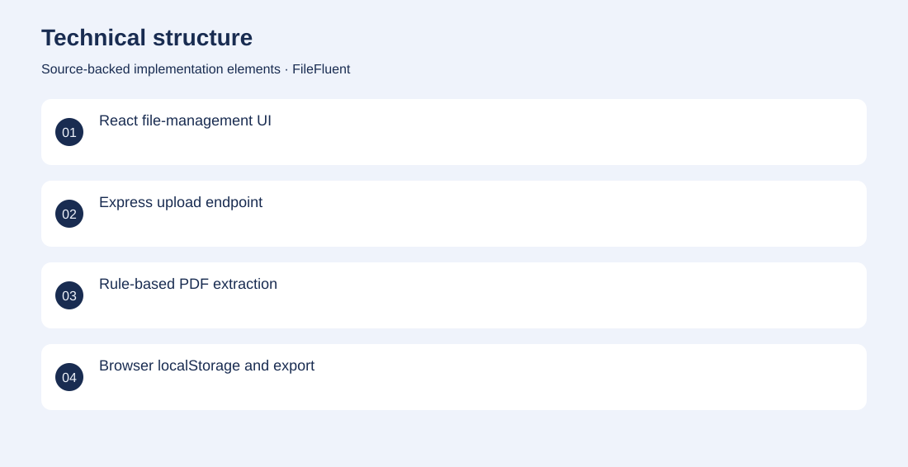
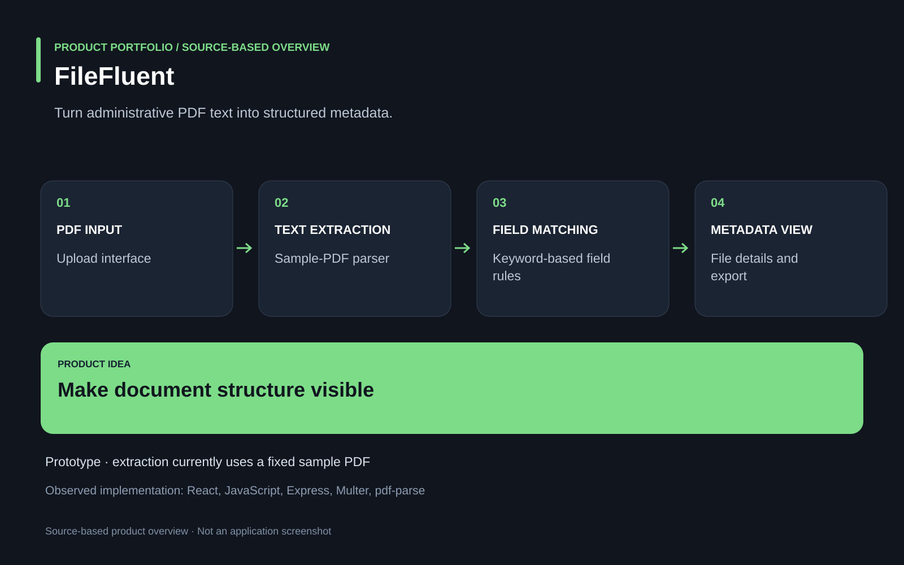

The project
Administrative documents contain repeated identifiers and fields that are tedious to inspect manually. A prototype connects document upload and file-detail screens with keyword-based PDF text extraction and downloadable metadata. Contributed to the React workflow and Node.js extraction prototype, connecting parsed document fields to a file-detail interface. Archived prototype. The parser currently reads a fixed sample PDF; general uploaded-document processing is not established.
The problem
Administrative documents contain repeated identifiers and fields that are tedious to inspect manually.
The solution
A prototype connects document upload and file-detail screens with keyword-based PDF text extraction and downloadable metadata.
My contribution
Contributed to the React workflow and Node.js extraction prototype, connecting parsed document fields to a file-detail interface.
Technical structure

Product overview

The portfolio cover is an editorial illustration. No live product screenshot is presented for this project.
Showcase assets
{kind=link}
{kind=link}
{kind=link}
Existing product identity. Newly designed marks are portfolio treatments, not claims of official client branding.